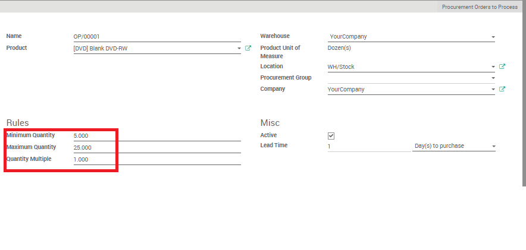

Minimum Stock rules and Make to Order have similar consequences but different rules. They should be used depending on your manufacturing and delivery strategies.
Terminology
Minimum stock rule
Minimum Stock rules are used to ensure that you always have the minimum amount of a product in stock in order to manufacture your products and/or answer to your customer needs. When the stock level of a product reaches its minimum the system will automatically generate a procurement with the quantity needed to reach the maximum stock level.
Make to Order
The Make to Order function will trigger a Purchase Order of the amount of the Sales Order related to the product. The system will not check the current stock valuation. This means that a draft purchase order will be generated regardless of the quantity on hand of the product.
Configuration
Minimum stock rules
The Minimum Stock Rules configuration is available through the menu in the drop down menu. There, click on Create to set minimum and maximum stock values for a given product.
Then, click on your product to access the related product form and, on the Inventory submenu, do not forget to select a supplier.

Tip
Don't forget to select the right product type in the product form. A consumable can not be stocked and will thus not be accounted for in the stock valuation.
Make to Order
The Make to Order configuration is available on your product form through your (or any other module where products are available).
On the product form, under Inventory, click on Make To Order.

Choice between the two options
The choice between the two options is thus dependent of your inventory strategy. If you prefer to have a buffer and always have at least a minimum amount, the minimum stock rule should be used. If you want to reorder your stocks only if your sale is confirmed it is better to use the Make to Order.